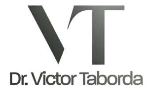
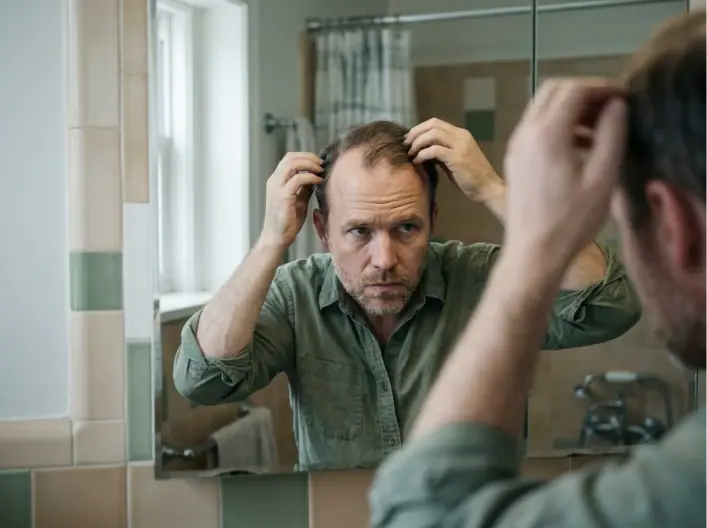
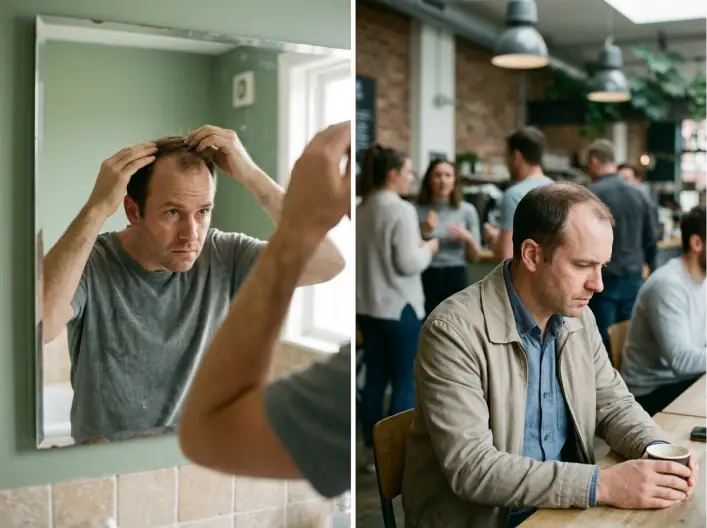
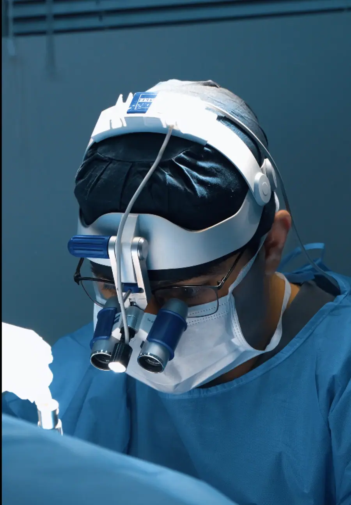

Paleta de cores
Medida no navegador: fundos ponderados pela área ocupada, textos pela quantidade de caracteres. Destaques reúnem cores saturadas e fundos de botão.
Fundos
rgb(244, 245, 241)
rgb(54, 58, 53)
rgb(252, 252, 252)
Textos
rgb(85, 90, 80)
rgb(101, 103, 100)
rgb(51, 55, 47)
rgb(252, 252, 252)
rgb(234, 237, 230)
rgb(72, 79, 70)
Destaques
Gradientes
linear-gradient(90deg, rgb(72, 79, 70) 0%, rgb(141, 151, 138) 100%)radial-gradient(115% 115% at 100% 0%, rgba(149, 160, 146, 0.1), rgba(0, 0, 0, 0) 50%), linear-gradient(158deg, rgb(255, 255, 255) 0%, rgb(24radial-gradient(125% 130% at 85% 0%, rgba(149, 160, 146, 0.34), rgba(0, 0, 0, 0) 56%), noneradial-gradient(120% 100% at 0% 0%, rgba(149, 160, 146, 0.14), rgba(0, 0, 0, 0) 55%), linear-gradient(160deg, rgb(255, 255, 255) 0%, rgb(238radial-gradient(130% 130% at 85% 0%, rgba(149, 160, 146, 0.22), rgba(0, 0, 0, 0) 55%), noneTipografia
Escala usada (desktop 1440px)
| Tamanho | Peso | Família | Amostra |
|---|---|---|---|
| 56px | 500 | Neue montreal | Texto de exemplo |
| 48px | 500 | Neue montreal | Texto de exemplo |
| 40px | 400 | Neue montreal | Texto de exemplo |
| 37px | 500 | Neue montreal | Texto de exemplo |
| 32px | 400 | Neue montreal | Texto de exemplo |
| 29px | 500 | Neue montreal | Texto de exemplo |
| 28px | 500 | Neue montreal | Texto de exemplo |
| 24px | 500 | Neue montreal | Texto de exemplo |
| 21px | 400 | Neue montreal | Texto de exemplo |
| 19px | 400 | Neue montreal | Texto de exemplo |
Mobile (390px): 40px/500, 32px/400, 32px/500, 24px/400, 24px/500, 19px/400, 19px/500, 18px/400 · H1 no mobile: 40px
Tags
| Tag | Família | Tamanho | Peso | Altura de linha | Espaçamento | Caixa | Cor |
|---|---|---|---|---|---|---|---|
| <h1> | Neue montreal | 56px | 500 | 67.2px | -1.92px | none | #33372F |
| <h2> | Neue montreal | 48px | 500 | 57.6px | -0.8px | none | #33372F |
| <h3> | Neue montreal | 28.8px | 500 | 43.2px | normal | none | #484F46 |
| <p> | Neue montreal | 19.2px | 400 | 28.8px | normal | none | #555A50 |
Botões
Recriados com os estilos computados reais. Efeitos de hover e animação não aparecem aqui; veja a seção de animações.
fundo #484F4600 · texto #FCFCFC · raio 0px · padding 20px 32px · 16px/500 none · 5x na páginafundo #484F4600 · texto #33372F · raio 0px · padding 20px 32px · 16px/500 none · 3x na páginafundo #484F4600 · texto #FCFCFC · raio 10px · padding 15px 20px · 16px/500 none · 1x na páginafundo #484F4600 · texto #484F46 · raio 0px · padding 20px 32px · 17.6px/500 none · 1x na páginafundo #484F4600 · texto #33372F · raio 20px · padding 19px 32px · 16px/500 none · 1x na páginaCards e containers
Você evita certas fotos e muda o penteado para tentar disfarçar a falha.
raio 20px · sombra none · borda 1px solid rgba(54, 58, 53, 0.1) · 630x579px★★★★★ Experiência muito positiva. Atendimento excelente. Me senti bem confortável em todas
raio 20px · sombra rgba(255, 255, 255, 0.6) 0px 1px 0px 0px inset, rgba(54, 58, 53, 0.5) · borda 1px solid rgba(54, 58, 53, 0.12) · 412x277pxProcedimento com implanters Trabalhamos com implanters, que permitem implantar um número m
raio 18px · sombra rgba(255, 255, 255, 0.6) 0px 1px 0px 0px inset · borda 1px solid rgba(54, 58, 53, 0.14) · 412x364px02 Técnica FUE O método moderno que usamos, fio a fio, com cicatrizes pequenas e recuperaç
raio 18px · sombra rgba(255, 255, 255, 0.6) 0px 1px 0px 0px inset · borda 1px solid rgba(54, 58, 53, 0.14) · 410x356pxDr. Victor Taborda CRM/PR 46609 · RQE 36133
raio 14px · sombra none · borda 1px solid rgba(54, 58, 53, 0.16) · 328x90pxBordas, raios e sombras
Sombras
rgba(255, 255, 255, 0.6) 0px 1px 0px 0px insetrgba(54, 58, 53, 0.55) 0px 10px 24px -10px, rgba(255, 255, 255, 0.18) 0px 1px 0px 0px insetrgba(255, 255, 255, 0.6) 0px 1px 0px 0px inset, rgba(54, 58, 53, 0.5) 0px 14px 30px -22pxEspaçamentos
- Largura do conteúdo mais comum: 1280px
- Padding vertical das seções (topo/base): 0px/0px (10x)
- Gaps mais usados (flex/grid): 20px, 5px, 10px, 12px, 0px 10px, 18px
- Altura total da página: 9889px em 10 seções
Estrutura e ritmo de cores das seções
Cada faixa é uma seção de topo, com altura proporcional e a cor ou imagem de fundo real.
Animações, ícones e bibliotecas
- Keyframes próprios: bp-fluxo, bp-pulse, seta-cima-baixo
- Animações de entrada do Elementor: nenhuma
- Classes de scroll reveal da casa: nenhuma
- Ícones: 24 SVG, 0 ícones de fonte
- Bibliotecas e tags detectadas: ga4, jquery, lottie, meta-pixel, swiper
Snippets da biblioteca presentes nesta página
- Nenhum snippet da biblioteca identificado.
Imagens do site



